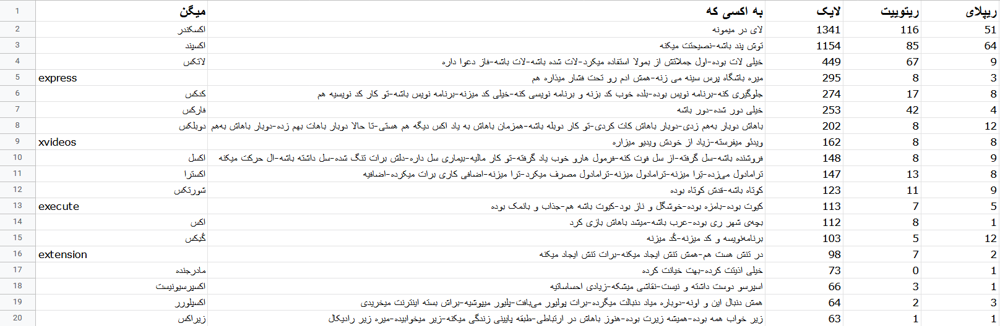

مدتی است که در توییتر فارسی ژانر «به اکسی که {۱} میگن {۲}» داغ شده. البته این دفعه اولی نیست که این ژانر داغ میشه و قبلا هم توییت هایی با این مضمون نوشته شده. از طریق لینک زیر میتونید توییت های این ژانر رو ببینید :
با توجه به محدودیت API توییتر که فقط توییت های ۳۰ روز اخیر رو نشون میده، من از روش اختصاصی خودم برای دانلود توییت ها استفاده کردم 🙂 تعداد ۱۶۲۱ توییت رو ذخیره و پردازش کردم و نتیجه رو در فایل اکسل زیر قرار دادم :
فایل بالا شامل ۵ ستون زیر است :«میگن» : کلمهای که به جای {۲} قرار میگیره.«به اکسی که» : جمله/جملاتی که به جای {۱} قرار میگیره. «لایک» : مجموع تعداد لایک هایی که کلمه {۲} گرفته است.«ریتوییت» : مجموع تعداد ریتوییت هایی که کلمه {۲} گرفته است.«ریپلای» : مجموع تعداد ریپلای هایی که کلمه {۲} گرفته است.

فایل خام توییت ها رو به صورت json میذارم اگر خواستید خودتون باهاش کار کنید :
nb.neighbours()
| title | date | |
|---|---|---|
| prev | شخم توییتر فارسی (اراضی برنامهنویسان) — بخش اول | ۱۴۰۰/۰۸ |
| next | شخم توییتر فارسی (اراضی برنامهنویسان) — بخش دوم | ۱۴۰۰/۰۹ |